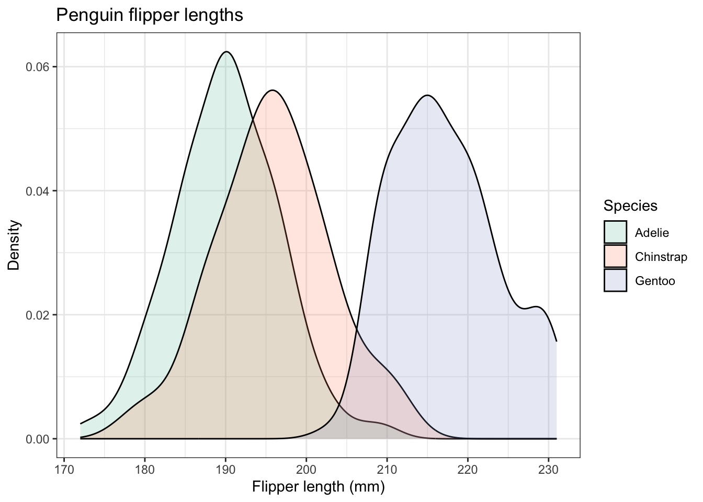
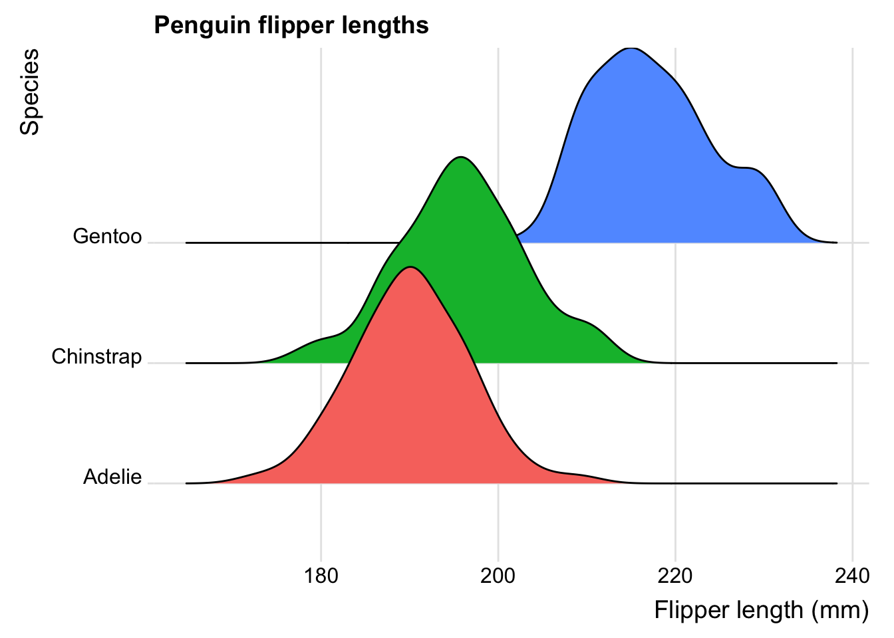
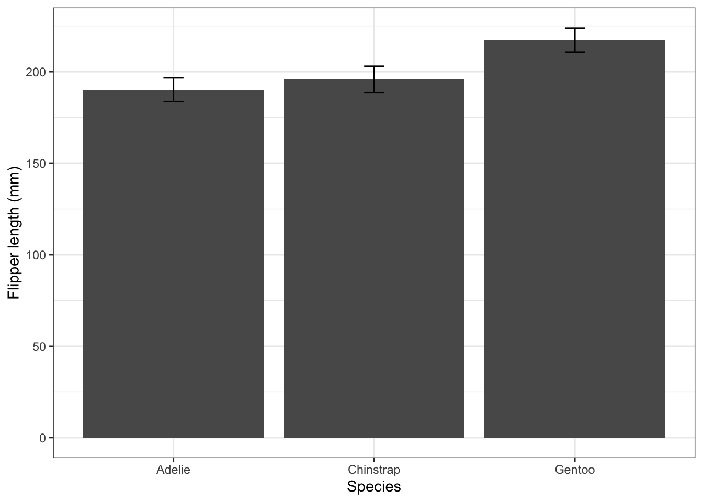
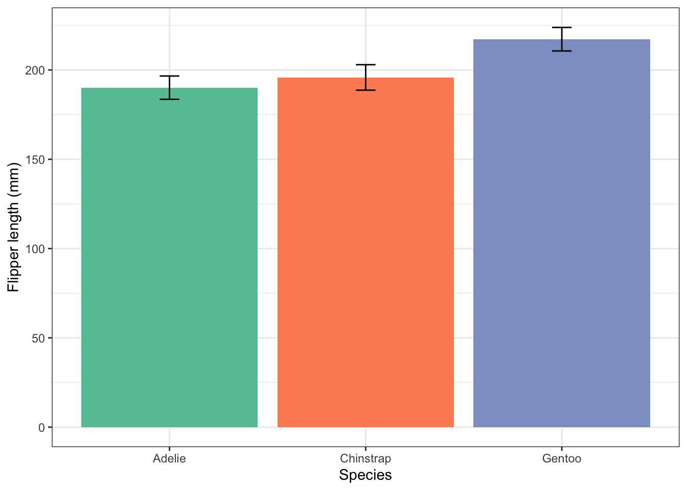

Chapter 2 Plot your data
In this exercise we are going to produce and improve a variety of useful and widely used plots using the package ggplot which is part of the larger tidyverse package.
You will see that the code to do each plot is very similar, whatever the type of plot, and that plots can be built up from very basic forms to become really attractive, informative versions with very little additional effort.
You need to read the examples in this worksheet and then fill in the missing code or alter what is provided already in the empty code chunks of the accompanying template script. Instructions for getting that are given below.
As you complete each code chunk, try it out by pressing the green arrow at the top right of the chunk. Sometimes you might want to try out an individual line. You can do that by placing the cursor anywhere in the line and pressing Controll-Entr (windows) or Command-Enter (Mac)
Remember that the template is a markdown document, so you can add extra text between the code chunks to explain to yourself what is going on. You can format this test, if you wish, according to the very basic markdown rules for doing this. See Help/Markdown Quick Reference. This formatting is only useful if you ‘knit’ the script, by pressing the knit button at the top of the script pane. Try this! I suggest you knit to html. This is how the worksheet you are working from was produced.
2.2 Get the template script
This next chunk will download the template file that you need to fill in as you work through this worksheet, and put it in the scripts subfolder within your project folder. For it to work, you need to be ‘working in your Project’ - in which case the name of the project will appear in the top right of the main RStudio window, and if you have a subfolder within the project folder called ‘scripts’. If any of that is not true, it needs to be sorted now!
2.3 Load the Palmer penguin data
For this exercise we use the Palmer penguins data set which comes with the package palmerpenguins
The palmerpenguin package contains two built-in data sets. One is called penguins:
Here we load the data into this R session (you will now see it in the Environment pane) and we inspect it using the function glimpse().
## Rows: 344
## Columns: 8
## $ species <fct> Adelie, Adelie, Adelie, Adelie, Adelie, Adelie, Adel…
## $ island <fct> Torgersen, Torgersen, Torgersen, Torgersen, Torgerse…
## $ bill_length_mm <dbl> 39.1, 39.5, 40.3, NA, 36.7, 39.3, 38.9, 39.2, 34.1, …
## $ bill_depth_mm <dbl> 18.7, 17.4, 18.0, NA, 19.3, 20.6, 17.8, 19.6, 18.1, …
## $ flipper_length_mm <int> 181, 186, 195, NA, 193, 190, 181, 195, 193, 190, 186…
## $ body_mass_g <int> 3750, 3800, 3250, NA, 3450, 3650, 3625, 4675, 3475, …
## $ sex <fct> male, female, female, NA, female, male, female, male…
## $ year <int> 2007, 2007, 2007, 2007, 2007, 2007, 2007, 2007, 2007…How many rows are there and how many columns?
For more detailed meta-information on the data we just type the name of the data set with a question mark before it:
2.4 Summary stats on all the numeric columns
This is in general useful to get, at least for the columns that contain numerical data, since it shows which columns contains NAs,which is R-speak for missing data. They are how R represents what would be empty cells in an Excel spreadsheet.
## species island bill_length_mm bill_depth_mm
## Adelie :152 Biscoe :168 Min. :32.10 Min. :13.10
## Chinstrap: 68 Dream :124 1st Qu.:39.23 1st Qu.:15.60
## Gentoo :124 Torgersen: 52 Median :44.45 Median :17.30
## Mean :43.92 Mean :17.15
## 3rd Qu.:48.50 3rd Qu.:18.70
## Max. :59.60 Max. :21.50
## NA's :2 NA's :2
## flipper_length_mm body_mass_g sex year
## Min. :172.0 Min. :2700 female:165 Min. :2007
## 1st Qu.:190.0 1st Qu.:3550 male :168 1st Qu.:2007
## Median :197.0 Median :4050 NA's : 11 Median :2008
## Mean :200.9 Mean :4202 Mean :2008
## 3rd Qu.:213.0 3rd Qu.:4750 3rd Qu.:2009
## Max. :231.0 Max. :6300 Max. :2009
## NA's :2 NA's :2We see that there are some rows with NAs in for a few of the columns. We need to be aware of this when doing calculations wih the data, such as taking means.
Here, we will remove those rows:
2.6 How many observations are there for each species?
Note the use of the pipe operator |>, here and throughout. Think of it as meaning and then. It feeds the output of one line into the function of the next line, where it is used as that function’s first argument.
## # A tibble: 3 × 2
## species n
## <fct> <int>
## 1 Adelie 146
## 2 Chinstrap 68
## 3 Gentoo 1192.7 Mean value for each numerical variable, for each species
Here is an example of the use of the group_by() then summarise() combination, whereby data is first grouped, here by species, then summary statistics (of your choice) are calculated for each group.
In this example the data are grouped by species, then the mean value of all the columns that contain numerical data are calculated, not just an overall value for the whole column, but for each species
penguins |>
group_by(species) |>
summarize(across(where(is.numeric), mean, na.rm = TRUE)) |>
ungroup() # good practice to include this at the end.## # A tibble: 3 × 6
## species bill_length_mm bill_depth_mm flipper_length_mm body_mass_g year
## <fct> <dbl> <dbl> <dbl> <dbl> <dbl>
## 1 Adelie 38.8 18.3 190. 3706. 2008.
## 2 Chinstrap 48.8 18.4 196. 3733. 2008.
## 3 Gentoo 47.6 15.0 217. 5092. 2008.2.8 Scatter plots
Is flipper length correlated with body mass?
We could a do correlation test to find this out, but let us first plot the data. We will show here how an elegant plot can be built up, starting from a very basic one, so that you see what each line of code for the finished version actually does. In the chunks below, run each one in turn to see the effect of each successive change that you make.
First we feed the penguin data to the function ggplot(), and use its aes() argument to tell it which variables are to be ‘mapped’ to which aesthetic (which means, roughly speaking, ‘visible’) features of the plot, such as the x-axis, the y-axis, point and line colours, fill colours, symbol types and size etc:

This produces the first layer of the eventual finished plot, an empty plot, ready to display data. Before it can do this, ggplot() needs to be told how you want to do so - what type of plot do you want? For that, we add a geom.....() line, to specify the type of plot.
There are lots of geom types, but for a scatter plot we use geom_point():

This gives us a recognisable scatter plot, but it is deficient in a number of ways. For starters, we know that there are three species of penguin. It would be better if each were plotted using symbols of a different colour, shape or size. We can do this by adding in an extra argument to the aesthetic in the first line. Here we include colour = species.

Can you guess what you should have do if you wanted not the symbol colour, but its shape or size to depend on species? Clue: change one word!
Now we add labels, titles and so on, using the line labs(...). Note how we can actually write the arguments of this over several lines on the page, for clarity.
penguins |>
ggplot(aes(x=flipper_length_mm,y=body_mass_g,colour=species)) +
geom_point() +
labs(x = "Flipper length (mm)",
y = "Body mass (g)",
colour= "Species", # this changes the title of the legend.
title="Penguin size, Palmer Station LTER",
subtitle="Flipper length and body mass for Adelie, Chinstrap, and Gentoo Penguins",
caption = "Alternative place to put the information in the subtitle")
It can be useful to include some combination of titles, subtitles and captions if the figure is to be used as part of a presentation or poster, but if it is to go in a report, you would normally only include a caption, and let the word-processing software do it, and if just for exploratory analysis, not even that. I normally do include axis labels, however.
Now we use a theme to alter the overall look of the figure. There are several built-in themes you can choose from, and others from packages that you can use. I usually use theme_cowplot() from the cowplot package. Try typing ?theme at the command prompt in the console window to see what is available. Here, we use the built-in theme_bw():
penguins |>
ggplot(aes(x=flipper_length_mm,y=body_mass_g,colour=species)) +
geom_point() +
labs(x = "Flipper length (mm)",
y = "Body mass (g)",
colour= "Species",
title="Penguin size, Palmer Station LTER",
subtitle="Flipper length and body mass for Adelie, Chinstrap, and Gentoo Penguins") +
theme_bw()
Now we reposition the legend. We don’t have to, but we might not like the default position of the legend. If not, we can move or even remove it using another theme() line. The position argument of this can be “none” if you want to remove it, top”, “bottom”, “left”, “right” or a numerical vector in relative coordinates, where c(0,0) means bottom left within the plot, and c(1,1) means top-right. This is what we use here. Play around with different values.
penguins |>
ggplot(aes(x=flipper_length_mm,y=body_mass_g,colour=species)) +
geom_point() +
labs(x = "Flipper length (mm)",
y = "Body mass (g)",
colour= "Species",
title="Penguin size, Palmer Station LTER",
subtitle="Flipper length and body mass for Adelie, Chinstrap, and Gentoo Penguins") +
theme_bw() +
theme(legend.position = c(0.2,0.8)) # try "top", "left" etc
Nicer colours. If you don’t like the default colours offered by R, there are several other palettes available, for example the Brewer palettes, borrowed from the world of maps. See https://colorbrewer2.org ,and for a list of the available palettes, type >?scale_colour_brewer into the console pane then look at the help that appears in the Help pane (bottom right), and scroll down to the palettes section. Note that we dont have to alter the colours. But doing so can make your plots not only look nicer, but serve some other purpose, such as to be colour-blind friendly, or have colours that are appropriate for the variables being plotted (eg red points for red things, blue points for blue things). For an assignment or dissertation report, it is a good idea to pick a palette that you like and that works, and stick with it, so that all your plots have the same general look. Here we choose the qualitative palette "Set2" and use it by by adding the line scale_colour_brewer(palette="Set2"). Try a few other palettes.
penguins |>
ggplot(aes(x=flipper_length_mm,y=body_mass_g,colour=species)) +
geom_point() +
labs(x = "Flipper length (mm)",
y = "Body mass (g)",
colour= "Species",
title="Penguin size, Palmer Station LTER",
subtitle="Flipper length and body mass for Adelie, Chinstrap, and Gentoo Penguins") +
scale_colour_brewer(palette="Set2") + # try other palettes eg "Set3"
theme_bw() +
theme(legend.position = c(0.2,0.8)) # try "top", "left" etc
If we like, we can add best fit lines to each subset of the data, using geom_smooth(). To produce straight line fits, geom_smooth() needs to be told to use a linear model, using the method = "lm" argument. By default, you will get lines with a grey 95% confidence band around them. This can be useful, but if you don’t want it, add the argument se = FALSE, as we have done below. We have also altered the linewidth.
penguins |>
ggplot(aes(x=flipper_length_mm,y=body_mass_g,colour=species)) +
geom_point() +
geom_smooth(method="lm", linewidth=0.5,se=FALSE) + # try leaving out the se argument
labs(x = "Flipper length (mm)",
y = "Body mass (g)",
colour= "Species",
title="Penguin size, Palmer Station LTER",
subtitle="Flipper length and body mass for Adelie, Chinstrap, and Gentoo Penguins") +
scale_colour_brewer(palette="Set2") +
theme_bw() +
theme(legend.position = c(0.2,0.8)) # also try legend.position = "top", "left" etc
2.9 Repeat for bill length and flipper length
Modify the code of the previous plot so that you now plot bill length vs flipper length. Adjust any labels and titles as necessary. This time, put the legend in the bottom right of the plot.
penguins |>
ggplot(aes(x=flipper_length_mm,y=bill_length_mm,colour=species)) +
geom_point() +
geom_smooth(method="lm", linewidth=0.5,se=FALSE) + # try leaving out the se argument
labs(x = "Flipper length (mm)",
y = "Bill length (mm)",
colour= "Species",
title="Penguin size, Palmer Station LTER",
subtitle="Flipper length and bill length for Adelie, Chinstrap, and Gentoo Penguins") +
scale_colour_brewer(palette="Set2") +
theme_bw() +
theme(legend.position = c(0.9,0.2)) # play with the values to get it where you want it
Do you see how straightforwrd it is to adapt the code that produces one plot to get the code you need for another, similar plot?
2.10 Add yet more informtion to the plot
Let us include the information of which island the penguins come from by making the shape of the plotted points be dependent on that:
penguins |>
ggplot(aes(x=flipper_length_mm,y=bill_length_mm,colour=species,shape=island)) +
geom_point() +
#geom_smooth(method="lm", linewidth=0.5,se=FALSE) + # try leaving out the se argument
labs(x = "Flipper length (mm)",
y = "Bill length (mm)",
colour= "Species",
shape="Island",
title="Penguin size, Palmer Station LTER",
subtitle="Flipper length and bill length for Adelie, Chinstrap, and Gentoo Penguins") +
scale_colour_brewer(palette="Set2") +
theme_bw() +
theme(legend.position = "right") # play with the position to get it where you want it. Try "top" etc.
2.11 Distribution of penguin flipper lengths
The distribution of a data set is often a useful thing to know. Around which value are the data grouped, how widely spread are they and are the values symmetrically or asymmetrically distributed around the central value? A number of plot types can show this for us. Here we illustrate histograms, density plots, box plots, violin plots and ridge plots.
2.11.1 Histogram
First, let’s do a basic histogram. For this we use geom_histogram(). In the ggplot line, in the aes() argument, we need only specify the variable that maps to x, since the software will count how many observations lie within specific narrow ranges of the variable, called bins. Those bin counts will be the y variable of the histogram. To find the distribution of flipper length, we use flipper_length_mmm as the x variable. So we could try

But this isn’t useful. The histograms for the three species overlap each other, so we need to give each one a different colour, and we need to reduce the opacity of the bars so that the histograms behind are not obscured by the ones in front, where they overlap. Further, we need to stop ggplot from stacking the different histogram bars on top of each other where those for different species are in the same bin. Annoyingly, that is what it does by default, which makes seeing the individual distributions clearly much more difficult.
Another thing with histograms, something that can make them a fiddle to use, is that their usefulness in revealing a distrivution is affect by how wide the bins are. By default, ggplot chooses the bin width such that you get 30 bins altogether. This may not be optimal. Here, let’s try specifying the bin width to 4 mm (but see what happens when you try other values, especially very large and very small values).
This we can achieve by:
- incuding
fill = speciesin the aes() argument of ggplot. - sepcifying
position = identityas an argument ofgeom_histogram(), to stop the stacking. - specifying the opacity argument
alphato be a value less than 1. Here we try alpha = 0.4` - but try other values in the range 0 (transparent) - 1 (opaque), to reduce the opacity. - specifying binwidth = 4 - try other values
penguins |>
ggplot(aes(x=flipper_length_mm, fill = species)) + # why is y not specified?
geom_histogram(position = "identity", alpha = 0.4, binwidth = 4)
So, a lot going on, but still only three lines of code!
Now add good axis labels, an overall theme, and choose a colour scheme you like, and the legend position, just as you have done before:
penguins |>
ggplot(aes(x=flipper_length_mm,fill=species)) +
geom_histogram(position="identity",alpha = 0.4, binwidth = 4) +
labs(x = "Flipper length (mm)",
y = "Count",
fill= "Species", # specifies the legend title. See what happens if you omit this line.
title="Penguin flipper lengths") + # we wouldn't use this for a figure going in a report.
scale_fill_brewer(palette="Set2") +
theme_bw() +
theme(legend.position = c(0.9,0.8)) # play with the position to get it where you want it
In the scatter plot and the histogram, we have used colour to distinguish the different species. We can do this because our data set is tidy: there is just one column that species the species, and the same for every other variable. That same feature of the data enables to use another way to represent the different species: facet_wrap(~species). This gives us three separate plots, side by side or one above the other. See it used here:
penguins |>
ggplot(aes(x=flipper_length_mm,fill=species)) +
geom_histogram(position="identity",alpha = 0.4, binwidth = 4) +
labs(x = "Flipper length (mm)",
y = "Count",
fill= "Species",
title="Penguin flipper lengths") +
facet_wrap(~species) + #try adding the argument ncol = 1.
scale_fill_brewer(palette="Set2") + # try other palettes, eg "Set1".
theme_bw() +
theme(legend.position="none") # we don't need a legend!
Just a thought, but do the colours here serve any useful purpose? What extra information do they convey? If you ever think that a feature of a graph conveys no additional information, consider omitting it. Here is the figue before without colours, but going for white brs with grey outlines:
penguins |>
ggplot(aes(x=flipper_length_mm)) +
geom_histogram(position="identity",alpha = 0.4, binwidth = 4, fill="white",colour="grey50") +
labs(x = "Flipper length (mm)",
y = "Count",
fill= "Species", # specifies the legend title. See what happens if you omit this line.
title="Penguin flipper lengths") + # we wouldn't use this for a figure going in a report.
facet_wrap(~species) + #try adding the argument ncol = 1.
theme_bw() +
theme(legend.position="none") # we don't need a legend!
Arguably, this is a better plot than the previous one because it excludes the potentially confusing redundancy of using different colours each species, when we already know which species is the subject of each plot.
If you don’t like white as the fill colour, try another one, for exampe this one that I found on Cynthia Brewer’s very useful map colour site: https://colorbrewer2.org
penguins |>
ggplot(aes(x=flipper_length_mm)) +
geom_histogram(position="identity",alpha = 0.4, binwidth = 4, fill="#a6bddb",colour="grey50") +
labs(x = "Flipper length (mm)",
y = "Count",
fill= "Species", # specifies the legend title. See what happens if you omit this line.
title="Penguin flipper lengths") + # we wouldn't use this for a figure going in a report.
facet_grid(island~species) + #try adding the argument ncol = 1.
theme_bw() +
theme(legend.position="none") # we don't need a legend!
Different fill colours would be useful if the different penguin species had distinctive dominant colours, but that isn’t the case!
2.11.2 Density plot
An alternative to a histogram, the density plot, gives us a smoothed version of the histogram. The vertical axis on these is not a count, but a measure of the concentration of the data.
Here is one with overlapping density plots
penguins |>
ggplot(aes(x=flipper_length_mm,fill=species)) +
geom_density(alpha=0.2) +
labs(x = "Flipper length (mm)",
y = "Density",
fill= "Species",
title="Penguin flipper lengths") +
scale_fill_brewer(palette="Set2") +
theme_bw() +
theme(legend.position = "right") # play with the position to get it where you want it
We can also adapt this and do what was done for the histograms and do a set of three, one for each species, using facet_wrap():
penguins |>
ggplot(aes(x=flipper_length_mm)) +
geom_density(alpha = 0.2, fill="#a6bddb",colour="grey50") +
labs(x = "Flipper length (mm)",
y = "Count",
fill= "Species", # specifies the legend title. See what happens if you omit this line.
title="Penguin flipper lengths") + # we wouldn't use this for a figure going in a report.
facet_wrap(~species) + #try adding the argument ncol = 1.
theme_bw() +
theme(legend.position="none") # we don't need a legend!
Which is more useful in this case: the overlapping plots on one chart, or the separate charts done using facet_wrap()? Whatever you think here, the answer in other cases will sometimes be one, sometimes the other. Now you have the tools to enable you to try both and make the best choice.
2.11.3 Box plots
Box plots are a really useful way to summarize the distribution of numerical response data such as flipper_length_mm across different categorical variables, such as species. We use geom_boxplot() to produce them.
Let’s do a basic box plot of flipper lengths for each penguin species:

Now let’s use what we have done before to add code lines that
- include suitable axis labels and a title
- give the same ‘theme’ ie overall look as the previous graphs
- fill the boxes with the same colour for each species.
- remove the legend that you now have, because you don’t need it (Why?). Use
theme(legend.position="none")to do this.
penguins |>
ggplot(aes(x=species,y=flipper_length_mm,fill=species)) +
geom_boxplot() +
labs(x = "Species",
y = "Flipper length (mm)",
title="Penguin flipper lengths") +
scale_fill_brewer(palette="Set2") +
theme_bw() +
theme(legend.position = "none") # no legend needed
2.11.4 Violin Plot using geom_violin()
This is a variant on the box plot. Each ‘violin’ is a sideways density plot of the distribution of the data for each species, with its own mirror image to make it look a bit like a violin. The code for these is exactly as for box plots except we use geom_violin().

Now we write code to improve this, just as you did the box plot. The final code is the same as for that apart from one line!
penguins |>
ggplot(aes(x=species,y=flipper_length_mm,fill=species)) +
geom_violin() +
labs(x = "Species",
y = "Flipper length (mm)",
title="Penguin flipper lengths") +
scale_fill_brewer(palette="Set2") +
theme_bw() +
theme(legend.position = "none") # no legend needed
2.11.5 Ridge plot
This is a variant on the density plot, that is most useful when you have lots of categorical variables. We have only three here, the three penguin species, but let’s try it anyway.
For this, we need the ggridges package. This is one of many packages that extend the power of ggplot, and so work in much the same way:
# library
#install.packages("ggridges") # use this once, if you have to, then comment it out.
library(ggridges)
# basic example
penguins |>
ggplot(aes(x = flipper_length_mm, y = species, fill = species)) +
geom_density_ridges() +
labs(x = "Flipper length (mm)",
y = "Species",
title="Penguin flipper lengths") +
theme_ridges() +
theme(legend.position = "none")
Now try producing graphs like the ones above, but for body mass rather than flipper length.
2.12 Bar chart with error bar
There are different ways to produce this commonly used way to summarise data. For example we might use one to compare the mean flipper lengths of the different penguin species. For a bar chart of these to be of any use at all, it needs to include error bars that show standard errors of the means, or standard deviations or confidence intervals (Why?). Which you use depends on the story you are trying to tell, but we won’t go into that here.
Here, we will add error bars that are ± one standard deviation of the samples
I usually first create a summary of the data, in which we calculate the means and appropriate error for each species for whichever variable I am interested in, then feed this summary table to ggplot and use geom_col() to plot the bars, with geom_errorbar() on top of that to plot the error bars.
Let’s do that first:
flipper_summary <- penguins |>
drop_na() |>
# these two lines produce a summary table
group_by(species) |>
summarise(fl.mean = mean(flipper_length_mm), fl.sd = sd(flipper_length_mm))
flipper_summary## # A tibble: 3 × 3
## species fl.mean fl.sd
## <fct> <dbl> <dbl>
## 1 Adelie 190. 6.52
## 2 Chinstrap 196. 7.13
## 3 Gentoo 217. 6.59To calculate error bar lengths we use a formula \(\text{SE} = \frac{\text{SD}}{\sqrt{n}}\) where \(n\) is the number of observations, SD is the standard deviation of the sample and SE is the standard error of the means of the sample. We can use the summary functions sd() to calculate the standard deviation, and n() to calculate \(n\).
flipper_summary |>
ggplot(aes(x = species, y = fl.mean)) +
geom_col() +
geom_errorbar(aes(ymin=fl.mean-fl.sd, ymax = fl.mean + fl.sd),width=0.1) +
labs(x = "Species",
y = "Flipper length (mm)") +
theme_bw() 
Now let’s alter this code so that each bar has a different fill colour, and remove the legend that then appears, since it is unnecessary?
flipper_summary |>
# we add an argument to colour each bar according to species
ggplot(aes(x = species, y = fl.mean, fill = species)) +
geom_col() +
geom_errorbar(aes(ymin=fl.mean-fl.sd, ymax = fl.mean + fl.sd),width=0.1) +
labs(x = "Species",
y = "Flipper length (mm)") +
theme_bw() +
# include an arument to remove the legend
theme()
Now let us replace this colour scheme with nicer ones (not just nice, but also colour-blind friendly, perhaps) offered by the Brewer palettes.
To do this we can add the line scale_fill_brewer(palette = "Set2"). Note: we use scale_colour_brewer() to alter the colours of points, like we did above, or the outline colour of bars, and use scale_fill_brewer() to alter the fill colour of bars. This is what we want to do here.
flipper_summary |>
ggplot(aes(x = species, y = fl.mean, fill = species)) +
geom_col() +
geom_errorbar(aes(ymin=fl.mean-fl.sd, ymax = fl.mean + fl.sd),width=0.1) +
labs(x = "Species",
y = "Flipper length (mm)") +
scale_fill_brewer(palette="Set2") +
theme_bw() +
theme(legend.position = "none")
If you don’t like the colours of the palette “Set2” you can try another one. To find out what palettes are available, remember, you can type ?scale_fill_brewer() into the console pane then look at the help that appears in the Help pane (bottom right), and scroll down to the Palettes section.
If you agree that having different fill colours for the bars is actually confusing and brings no information to the plot that we do not already know, you can modify the previous plot in the manner that you did for the separate histograms:
flipper_summary |>
ggplot(aes(x = species, y = fl.mean)) +
# add arguments here that give fill colour "#a6bddb" and outline colour "grey50".
geom_col(fill = "#a6bddb",colour = "grey50") +
geom_errorbar(aes(ymin=fl.mean-fl.sd, ymax = fl.mean + fl.sd),width=0.1) +
labs(x = "Species",
y = "Flipper length (mm)") +
theme_bw() +
theme(legend.position = "none")